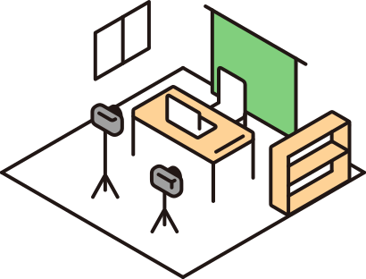
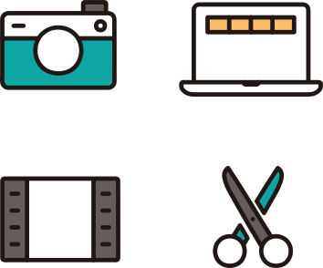

mono.createの編集者チームに登録すると、あなたのスキルに合った案件のご案内が届きます。営業・単価交渉・請求まわりはこちらで巻き取ります。

応募フォームからポートフォリオを添えてご応募ください。
実績を拝見し、担当ディレクターが面談します。
採用後、専用フォームでプロフィールを登録すると編集者一覧に掲載されます。クライアントから指名が入ることもあります。
案件のご案内はLINE・Chatwork・Slack・Discordなど、クライアントに合わせた連絡手段で届きます。受けたい案件だけ受けてOKです。納品したら案件報告シートにご記入ください(お支払いは25日締め・翌月末払い)。詳しい流れは進め方ガイドへ。

案件はこちらから届きます。DM営業や単価交渉は不要です。
プロフィールとポートフォリオが掲載され、クライアントから直接指名が入ります。
お支払いは25日締め・翌月末払い。報告シートに記入するだけで、請求・入金管理はmono.create側で行います。
経験年数は問いません。作品で判断します。
すでに在籍している方: マイページからGoogleアカウントでサインインし、プロフィールを更新できます。